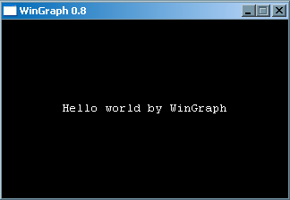
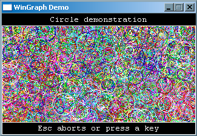
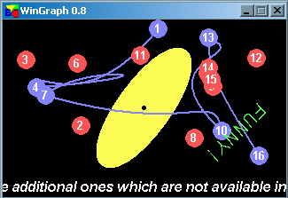
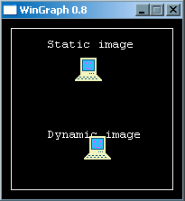
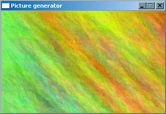
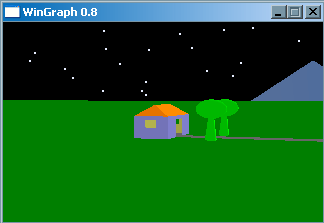
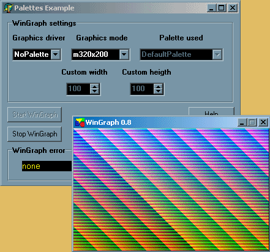
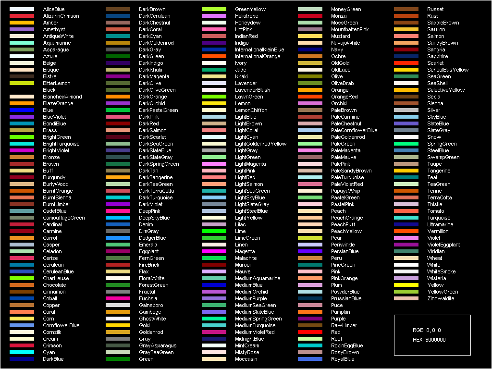

WinGraph Unit
v1.1 (03-2010)
What is this?
This is a unit for graphics written in Pascal with source code included. You can use it in your own programs to create basic graphics under Win32, in a dedicated GUI window, without any VCL or API call. To get more feelings look at the demos bellow.
It should be useful for those users who need a quick way to display 2D graphics in Windows (as it was in Borland Pascal - BP), without including huge VCL support or other advanced graphical libraries.
WinGraph comes from the "windows graphics unit". It is a unit written in Pascal for graphics programming under Win32. The source code is compatible with Free Pascal 2.4.0 and Delphi 7 compilers. This unit is intended to be a replacement of the standard Free Pascal's Graph unit for Win32 operating system. The later is highly compatible with the legacy BP graph unit for DOS, but, at the same time, it is slow and not very usable. In WinGraph all routines are implemented using Win32 GDI API calls. So this offers good speed, quick coding, a certain degree of compatibility with BP graph unit and several extensions specific to Win32 GDI system. It also initializes the OpenGL driver for doing more complex graphics and allows mixing the WinGraph and OpenGL drawing routines. After calling the initialization routine the unit starts a dedicated thread and a GUI window for drawing. You can add keyboard and mouse support to your graphical program by using specific units WinCrt and WinMouse (included). Be aware that the unit is not entirely BP compatible.
Folders of the package are organized as follows
\wingraph - main folder (everything is here)
\bin - binary units and executables
\demo - demo programs
\doc - documentation
\edit - editor configuration files
\src - units source codes and compiler configuration files
You must preserve this structure, otherwise units will not compile. Compiled binaries are compatible only with FPC 2.4.0 and Delphi 7. For other versions you should recompile all units from source.
Visit the project web site at http://math.ubbcluj.ro/~sberinde/wingraph
Get the latest version of the package here wingraph.zip
List of routines
A comprehensive list of all types, constants and routines defined by WinGraph and support units is included in list of routines page.
Code recipes
To learn basic programming with WinGraph please consult code recipes page. Some questions are answered there, as well.
Following screenshots are taken from the demos included in the package. Their sole purpose is to illustrate some of the capabilities of WinGraph. Review the source code for a quick learning.
|  |  |
|  |  |
|  |  |
|  | |
List of 256 pre-defined color names
WinGraph is able to work with all 24-bit format colors. However, to facilitate quick programming, it defines 256 color names as below. These are standard names compiled from various sources. For a huge list of color names visit a site here.

v1.1 (03-2010)
small bug fixes
compatibility with current FPC compiler (2.4)
v1.0 (09-2008)
small aesthetic fixes
mainly to reflect the "mature status" of the product
v0.9 (09-2007)
small fixes
enhanced WinCrt and WinMouse units
documentation updates
v0.8 (09-2006)
small bug fixes
256 pre-defined color names
more demos
enriched HTML documentation
v0.7 (12-2005)
several bug fixes (mainly thread related)
Sound routine modified
new routine GetFontSettings
v0.6 (05-2005)
code cleaning and optimization
better thread and palette support
many new routines
WinGraph is split into 3 units:
WinGraph - graphics handling
WinCrt - keyboard handling
WinMouse - mouse handling
several bug fixes
documentation rewritten
more demos
v0.5 (03-2004)
OpenGL initialization
custom window size
demos and docs updated
small fixes
v0.4 (08-2003)
docs written
first internet release
v0.3
additional routines are implemented
v0.2
first demo programs work
v0.1 (06-2003)
project start
most important BP graph routines are implemented
Copyright (c) 2003-2010 by Stefan Berinde
This package is Freeware, as long as the product which uses it is Freeware. You are allowed to do modifications on this unit but please state the original work. Drop me a line if you did something useful anyway.
Contact author
Stefan Berinde
email: sberinde[at]math[dot]ubbcluj[dot]ro
web: http://math.ubbcluj.ro/~sberinde